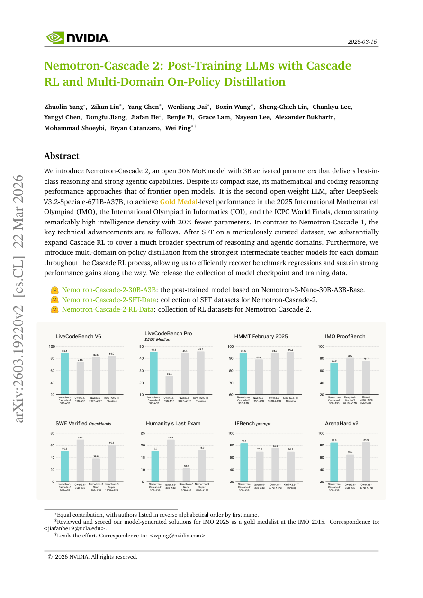

#1
★ 9/10
Nemotron-Cascade 2: Post-Training LLMs with Cascade RL and Multi-Domain On-Policy Distillation
Nemotron-Cascade 2：基于级联强化学习与多领域在线蒸馏的大模型后训练

图 Figure · Page 1 of paper
🎯 30B MoE模型用级联RL与在线蒸馏实现IMO/IOI金牌级推理能力
A 30B MoE model achieves IMO/IOI Gold Medal performance with 20x fewer parameters via Cascade RL and on-policy distillation.
| 维度 | 中文 | English |
|---|---|---|
| ❓ 待解决 的问题 |
训练能够达到顶尖水平推理能力的大语言模型，通常需要数千亿参数，部署成本极高。小模型很难在数学、编程、智能体等多个推理领域同时保持强劲性能。此外，后训练阶段普遍存在"此消彼长"的基准退化问题，即提升某一领域时，其他领域往往会出现性能下滑。 | Training large language models to reason at frontier-level performance typically requires hundreds of billions of parameters, making deployment expensive and inefficient. Smaller models struggle to maintain broad, consistent performance across diverse reasoning and agentic domains simultaneously. There is also a known challenge of benchmark regression — improving one domain while degrading another — during post-training. |
| 💡 解决 的亮点 |
• 大幅扩展了 Cascade RL 的覆盖范围，涵盖更广泛的推理与智能体任务领域，提供更丰富的多领域训练信号。 • 创新性地引入多领域在线蒸馏（on-policy distillation）：在 Cascade RL 训练过程中，针对每个领域动态使用最强的中间教师模型进行实时指导，有效遏制基准退化。 • 以极高的"智能密度"著称——仅用3B激活参数即达到IMO、IOI、ICPC金牌级别，参数量仅为同类最优开源模型的1/20。 | • Cascade RL is substantially expanded to cover a much broader spectrum of reasoning and agentic domains beyond the original framework, enabling richer multi-domain training signals. • Multi-domain on-policy distillation is introduced: the strongest intermediate teacher models for each specific domain are used to guide the student model in real-time during the Cascade RL process, efficiently recovering benchmark regressions. • Achieves remarkable "intelligence density" — Gold Medal-level performance on IMO, IOI, and ICPC with only 3B activated parameters, using 20x fewer parameters than the only other comparable open model. |
| 🧪 实验 内容 |
模型在全面的数学与编程竞赛基准上进行评估，包括2025年国际数学奥林匹克（IMO）、国际信息学奥林匹克（IOI）和ICPC世界总决赛等顶级竞赛题目。此外，还覆盖通用推理、智能体任务和指令遵循等基准。主要对比基线包括 DeepSeek-R1、QwQ，以及 DeepSeekV3.2-Special-671B-A37B（目前唯一另一个达到竞赛级性能的开源模型）。消融实验分析了多领域在线蒸馏相对于普通 Cascade RL 的具体贡献。 | The model was evaluated on a comprehensive suite of math and coding competition benchmarks including the 2025 IMO, IOI, and ICPC World Finals to test elite reasoning. Additional benchmarks covered general reasoning, agentic tasks, and instruction following. The primary baseline for comparison was frontier open-weight models including DeepSeek-R1, QwQ, and notably DeepSeekV3.2-Special-671B-A37B — the only other open model to achieve comparable competition-level performance. Ablation studies examined the contribution of multi-domain on-policy distillation versus vanilla Cascade RL. |
| 📊 实验 结果 |
Nemotron-Cascade 2（30B MoE，激活3B参数）在2025年IMO、IOI和ICPC世界总决赛上全部达到金牌级别表现。它是继 DeepSeekV3.2-Special-671B-A37B（671B总参数，37B激活参数）之后，全球第二个实现这一里程碑的开源模型。Nemotron-Cascade 2 仅用约1/20的激活参数量就达到了同等竞赛水准，体现出极高的"智能密度"。同时，该模型在多领域推理和智能体基准上也展现出接近顶尖开源模型的强劲性能。 | Nemotron-Cascade 2 (30B MoE, 3B activated) achieves Gold Medal-level performance on all three elite competitions: the 2025 IMO, IOI, and ICPC World Finals. It is the second open-weight model ever to achieve this milestone, after DeepSeekV3.2-Special-671B-A37B which has 671B total parameters (37B activated). Nemotron-Cascade 2 accomplishes this with 20x fewer activated parameters, demonstrating exceptionally high intelligence density. Its mathematical and coding reasoning performance approaches that of frontier open models despite its compact size, while also delivering strong agentic capabilities across multi-domain benchmarks. |
| 🏁 结论 | Nemotron-Cascade 2 证明了一个紧凑的30B MoE模型（激活3B参数）通过 Cascade RL 结合多领域在线蒸馏，可以达到顶尖的推理水平，并在IMO、IOI、ICPC等精英竞赛中取得金牌级成绩。本文确立了一个重要结论：精心设计的后训练策略能够极大地缩小小模型与大模型之间的能力差距，从根本上重新定义了参数高效模型所能达到的上限。 | Nemotron-Cascade 2 demonstrates that a compact 30B MoE model (3B activated parameters) can reach frontier-level reasoning performance through Cascade RL combined with multi-domain on-policy distillation, achieving Gold Medal-level results on elite math and coding olympiads. This work establishes that intelligent post-training strategies can dramatically close the gap between small and large models, redefining what is achievable under tight parameter budgets. |
| 🔗 论文 链接 |
arXiv: 2603.19220v2 · 📥 PDF | |
⚙️ Method · 方法详解
训练流程分为两大阶段：首先在精心筛选的高质量数据集上进行监督微调（SFT），为模型打下坚实基础。随后应用 Cascade RL——这是一种分阶段强化学习方法，逐步扩展到推理和智能体等更多任务领域，使用可验证的奖励信号来引导学习。关键创新在于，在 Cascade RL 的每个阶段，针对每个领域使用当前最强的中间检查点作为领域教师模型，实时生成在线示范数据，对学生模型进行蒸馏，及时修复性能退化。这一组合机制使30B MoE模型（每个token仅激活3B参数）能够在所有领域持续积累性能增益，而不会出现明显的此消彼长现象。
The training pipeline starts with Supervised Fine-Tuning (SFT) on a carefully curated high-quality dataset to establish a strong foundation. Then, Cascade RL is applied — a staged reinforcement learning approach that progressively expands coverage across reasoning and agentic domains, using verifiable reward signals. Critically, at each stage of Cascade RL, domain-specific teacher models (the strongest intermediate checkpoints for that domain) are used to generate on-policy demonstrations, distilling knowledge directly into the student model to fix performance regressions as they appear. This combination allows the small 30B MoE model (only 3B parameters activated per token) to steadily accumulate gains across all domains without sacrificing any single area.
📐 Key Formulas · 关键公式
\[\text{Cascade RL} + \text{On-Policy Distillation} \rightarrow \mathcal{L}_{\text{total}} = \mathcal{L}_{\text{RL}} + \lambda \cdot \mathcal{L}_{\text{KD}}\]
💡 总训练损失由两部分组成：强化学习损失（来自可验证奖励信号）与知识蒸馏损失（来自领域教师模型的在线示范）的加权组合，λ 控制蒸馏强度。
The overall training loss combines a reinforcement learning loss (from verifiable reward signals) with a knowledge distillation loss (from domain-specific teacher model demonstrations generated on-policy), where λ balances the two objectives.
🌟 Why It Matters · 为什么重要
本文打破了"顶尖推理能力必须依赖超大模型"的固有假设，证明通过巧妙的训练策略（Cascade RL + 在线蒸馏），参数量减少20倍的小模型同样能达到精英级智能。对于整个机器学习和机器人研究社区而言，这意味着强大的推理能力有望在资源受限的硬件上部署，大幅降低前沿AI的使用门槛。
This paper challenges the prevailing assumption that frontier reasoning requires massive models, showing that smart training recipes (Cascade RL + on-policy distillation) can unlock elite-level intelligence in a model 20x smaller than competitors. For the ML and robotics community, this means powerful reasoning capabilities could become deployable on resource-constrained hardware, democratizing access to frontier-level AI.